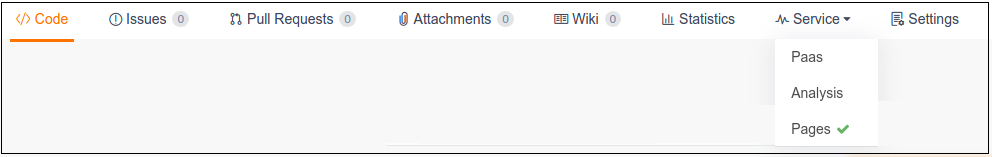
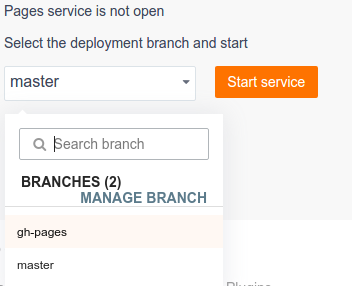
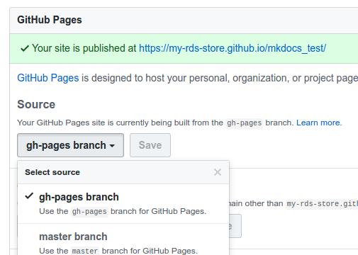

mkdocs 使用简明手册
完整文档请访问 markdown-docs-zh 或 mkdocs.org .
1. 安装
$ sudo pip install mkdocs
2. 命令
mkdocs new [dir-name]- Create a new project.mkdocs serve- Start the live-reloading docs server.mkdocs build- Build the documentation site.mkdocs help- Print this help message.
Project layout
mkdocs.yml # The configuration file.
docs/
index.md # The documentation homepage.
... # Other markdown pages, images and other files.
3. bulid
$echo "site/" >> .gitignore
4. mkdocs.yml 配置
site_name: MkLorum
pages:
- [index.md, Home]
- [about.md, About]
theme: readthedocs
dev_addr: 0.0.0.0:8000
5. 部署发布
$ mkdocs gh-deploy
5.1 码云
a ) . 选择 ： Service -- Pages 
b ) . 选择, gh-pages 分支, 并且 Start service

5.2 Github
在Settings下:
